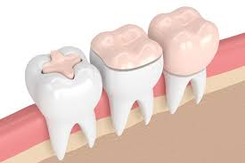

Filling and Restoration
- Dental fillings are typically used to treat cavities caused by tooth decay. The decayed portion of the tooth is removed, and the resulting cavity is filled with a restorative material to prevent the decay from progressing and to restore the tooth's shape and function. The most common types of dental fillings include:
- Amalgam Fillings
- Composite Fillings
- Ceramic Fillings
Restoration
-
Dental restorations involve more extensive repairs when the damage to the tooth is significant or when the tooth structure has been compromised. Restorations aim to strengthen and rebuild the tooth, providing long-lasting protection and functionality. Some common types of dental restorations include:
- Dental Crowns
- Dental Bridges
- Dental Implants
